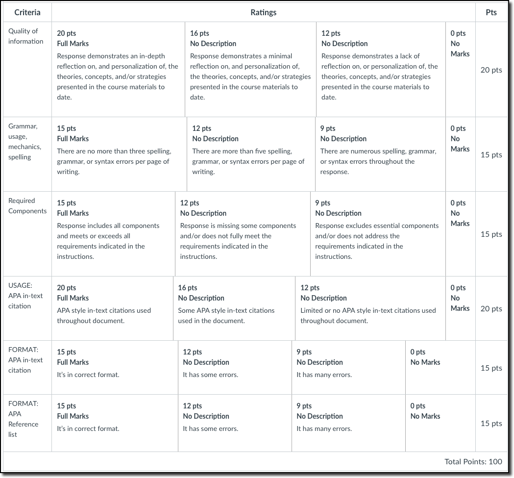

1 Appendix A
One of the major requirements of this course is to learn how to perform a motor skill (either Hand Juggling or Speed Cup Stacking). You will be required to practice, learn, and show proof of mastery for the selected skill by video recording your performance and submitting it for grading.
In addition to learning the skill of your preference, you will be required to write a reflection paper discussing your learning experience.
NOTE: If you have mastered Hand Juggling and Speed Cup Stacking, contact the instructor as soon as possible to discuss alternative skills you may select to practice. Note that you may be asked to prove you have mastered both skills before you are assigned a new skill.
1.1 The choice of skill
You will be given the option to choose the skill to practice and learn. But do not worry, if you select one of the two skills and feel that you are not improving in the fitst couple of weeks of practice, you will be given the chance to switch to the other skill. It is important you choose the skill you feel most comfortable with as you will need to master it before the end of the semester.
You will learn in this course that Juggling and Cup Speed Stacking (3-6-3 technique) fall under two different categories as far as motor learning is concerned.
Each skill has different cognitive and motor skill demands. Juggling is categorized as a continuous skill. Continuous skills have not detectable beginning and end once the performer has started performing it. Cup Speed Stacking is considered a discrete skill, which has a clear beginning and end.
My suggestion:
- Watch the demo videos for both skills;
- Pick the one that is most appealing to you;
- Complete the tutorial for the chosen skill (Appendix B);
- Acquire the proper equipment and start practicing as per the instructions in this appendix;
- When released, complete the update assignments (1, 2, and 3);
- After completing the Update-2 assignment, you will be asked if: a) you want to keep practicing the selected skill or b) you want to choose the other skill.
1.2 Hand Juggling 3 objects continuously
Hand juggling requires lots of practice, and the amount of time needed to master this motor skill will depend on a number of factors. Dedication, focus, discipline, along with the use of motor learning strategies (Motor Learning Principles) are just some of these factors.
Some have claimed (and demonstrated) that juggling can be learned in 24 hours, or even 10 minutes.
For this assignment, you will be given plenty of time to learn the skill (up to 4 months if taking this course in the fall or spring). But DO NOT wait until the end of the semester to start practicing as learning a motor skill takes time, and after completing the Update-2 assignment you will not be allowed to switch skills.
1.2.1 Juggling Requirements
If you select the skill of hand juggling to practice and learn, you will be required to:
Juggle 3 objects continuously for at least
5 secondsto receive the full points under the evaluation category of TIME (refer to the Section 4.1 for this assignment).You can earn 5 extra points if you continuously juggle 3 objects for at least
10 seconds(using the correct technique). This points will be used toward the Quizzes category.
1.2.2 The technique
The “exchange continuous” technique is the only technique that will be accepted if you select the skill of juggling 3 objects. Watch the video below to have a sense of what this technique looks like.
1.2.2.1 STOP & Read: Incorrect techniques that will NOT be accepted
Below are some examples of techniques that you should NOT use. Although it is possible to “juggle” using different techniques, the alternative techniques discussed below WILL NOT be accepted. If you are unsure, contact Dr. Furtado to verify if the technique you are practicing will be accepted.
| Juggling with a pause | Juggling in circling motion |
|---|---|
| Some might use this technique during the early stages of skill learning, as a practice technique. However, the videos recorded for the learning updates and the final submission should not depict this technique. | Again, some might use this technique during the early stages of skill learning, as a practice technique. However, the videos recorded for the learning updates and the final submission should not depict this technique. |
1.2.3 Before you start practicing Juggling
Choose 3 objects to use when practicing this skill.
The only exception is that you cannot use scarves, plastic bags, or anything light that makes the “exchange” process easier. As you will see in the tutorial, scarves or plastic bags are used at the beginning of the learning process when learners need more time to think during the exchange. This is a learning technique that may be used as you practice this skill, but you should NOT submit the final video (or the Update-2) juggling scarves or plastic bags.
Although not required, I encourage you to purchase a set of 3 mini juggling balls if you choose this skill. Amazon sells a set of 3 for about $6. Here is the link → http://goo.gl/5VHs9d
I’ve put together a tutorial (Section 2) that is meant to help you before and after you start practicing. It is imperative you complete the tutorial before start practicing.
1.2.4 Things to consider when practicing Juggling
- Practice a few hours per day. Learning a motor skill takes time and practice. Waiting until the end of the term to begin practicing is a really bad idea.
- As you practice the skill, use the Motor Learning Principles (APPENDIX C) that will be taught in this course. For example, jugglers use the Principle of Simplification when learning to juggle 3 objects:
- They begin by tossing a single object up with one hand and catching with the opposite hand. Then, they proceed by using 2 objects, and then 3 objects. There are many other Motor Learning Principles that can be used when learning the skill of juggling. Note that this technique SHOULD NOT be used when recording the Update or Final video performance; this technique should only be used for training purposes.
- To earn the full points for TIME, student must juggle continuously for 5 seconds or more. The full evaluation criteria will be released soon.
1.3 Speed Cup Stacking
If you select the skill of cup stacking to practice and learn, you will be required to perform the technique called 3-6-3 (watch the video below) and finish the “up & down” at or under 7 seconds to receive full points. You can earn some extra points (up to 5 points) if you complete the 3-6-3 “up & down” at or under 5 seconds.
Visit the link below for an example that depicts the technique you will be required to learn if you choose this skill:
1.3.1 Before you start practicing Cup Stacking
- Purchase a set of 12 professional cups online or from a local toy store. Amazon sells a set of 12 cups for about $10 → https://goo.gl/q1kKiw
- I’ve put together a tutorial that is meant to help you before and after you start practicing: click here to access the tutorial
1.3.2 Things to consider when practicing Cup Stacking
- It is imperative that you practice a few hours per day. Learning a motor skill takes time and practice. Waiting until the end of the term to begin practicing is a really bad idea.
- As you practice the skill, use the Motor Learning Principles that will be taught in this course. For example, learners can employ the concept of “Whole Practice vs Part Practice” when learning the skill. Instead of trying to learn the 3-6-3 (Whole Practice), one can learn the “3” and the “6” steps separately (Part Practice).
1.4 Video Recording for Juggling or Cup Stacking
You must video record yourself while performing the chosen skill. Although students are free to choose the device of their choice, using a tablet, smartphone or even a laptop
1.4.1 A few things to consider:
- Pick a place with decent lighting
- Choose your device; it could be your cell phone, a tablet, or even a computer
- Practice several trials while the camera is off
- When ready, record a sequence of THREE trials with intervals of 3 seconds in between trials.
- Here is the sequence:
- Turn on the camera
- Position yourself in front of the camera (ensure your face appears on camera)
- Wait 3 seconds ⟶ TRIAL 1
- Wait 3 seconds ⟶ TRIAL 2
- Wait 3 seconds ⟶ TRIAL 3
- Turn off the camera; you are done!
1.5 Important notes
- The recording must be done continuously. Do not pause the video, especially in between trials; nor should the recorded sequence be edited in ANY FORM - IF YOU DO, THE VIDEO WILL BE RETURNED TO YOU.
- Any submission containing a video that does not conform to the requirements of the items above will be returned to the student. Note that the “late assignment” policy will be applied in such a case (refer to our Syllabus for more info).
- Though not required, it is recommended that you ask someone to video record you as that person can move and follow you in case you move around during the performance;
- If you juggle the object for 10 seconds (any of the 3 attempts), you may stop at 10 seconds since this is the minimum required to earn the extra points (refer to the Grading Rubrics);
- You MUST record 3 attempts, even if you got 10 seconds on the first and/or the second attempt;
- I will consider your best attempt for grading purposes, not the average of the 3 attempts.
- DO NOT record more than 3 attempts. If you recorded 3 trials and for some reason, you are not happy with the result, you will have to start all over. ONLY submit a video that has 3 attempts.
- You must provide the time it took you to complete each attempt. ONCE THE FINAL VIDEO IS RECORDED, WATCH IT AND USE A TIMER (CELL PHONE) TO TIME EACH ATTEMPT. WRITE IT DOWN SINCE YOU WILL NEED TO SUBMIT THE TIME IT TOOK YOU TO COMPLETE EACH ATTEMPT WITH THE VIDEO. YOU WILL DO IT BY ADDING ADDING A COMMENT TO THE SUBMITTED VIDEO. For instance:
- Attempt 1 → 4:34 (4 seconds and 34 milliseconds)
- Attempt 2 → 2:24 (2 seconds and 24 milliseconds)
- Attempt 3 → 1:11 (1 second and 11 milliseconds)
- Note that you should NOT add up the time of each attempt so that:
- 4:34
- 6:58 (4:34+2:24)
- 7:69 (4:34+2:24+1:11)
1.6 Video Submission (Juggling or Cup Stacking)
Follow the steps below to submit the video you recorded to fulfill the requirements of either the Update 2 or Final Video Performance assignment for the chosen skill (Juggling or Cup Stacking).
Record the video for the assignment in question (Update 2 or Final Video Performance)
Using a computer or tablet, open Canvas and locate the assignment in question
Click on Start Assignment
Attach your video to the submission and submit the assignment
1.7 6. Learning Task Updates
You will be submitting several updates throughout the semester (a 6-week period for summer sessions). Below you will find some key information regarding these updates. To avoid surprises, be proactive, and review these assignments.
1.7.1 Update 1: Cognitive stage
- First, read Chapter 12 (The Stages of Learning)
- As you are reading, pay close attention to the characteristics associated with the first stage of learning as described by Fitts and Posner (Cognitive Stage).
- Next, select the skill you will be practicing and learning as part of the Learning Task Assignment.
- Practice the skill for 1 or 2 days (a few hours each day). You will be asked to describe how your experience reflects (or does not) Fitts & Posner description of the Cognitive Stage. Please, be specific.
1.7.2 Update 2: Video update
You will be required to record and submit a video for UPDATE 2. The video you will be submitting must depict you performing the skill you have selected for the Learning Task Assignment. It should be apparent in the video that you have moved from the Fitts & Posner Cognitive Stage to the Associative Stage (refer to Chapter 12 for more info).
You must follow the instructions outlined above for video recording (Juggling and Cup Stacking) and video submission(both skills).
1.7.3 Update 3: Principles of Motor Learning*
*Does not apply to students taking this course during the winter.
This is the last update before you submit your video performance at the end of the semester (6-week period for summer sessions). You will be required to do the following:
Pick TWO of the Principles of Motor Learning you have been using to learn your selected motor skill (juggling or speed cut stacking).
For EACH, provide the following:
The principle’s name and definition (make sure to cite our textbook properly)
A description of how the principle is helping you to progress through the Fitts & Posner Stages of Learning (BE SPECIFIC)
The hurdles you have faced when trying to employ the principle as a learning strategy (BE SPECIFIC)
1.8 Reflection Paper
1.8.1 Instructions
In addition to performing the chosen task, you will be required to write a reflection piece describing your learning experience. You must include at least 3 Motor Learning Principles (MLP) as part of your reflection in addition to discuss the three stages of learning from Fitts and Posner (refer to Chapter 12 on our textbook). Read Appendix C for further information regarding the MLPs.
1.8.2 For the skill selected, do the following:
Write a 6-page (double-spaced) reflection paper describing your experience. As part of your reflection, you need to:
discuss how you moved through the stages of learning (described by Fitts and Posner - Chapter 12)
discuss 3 Motor Learning Principles (e.g., feedback, practice distribution, etc.) covered in this course and explain how the principles were applied to your learning experience.
1.8.3 Your reflection paper must:
- have a minimum of 6 FULL pages and no more than 10 pages;
- be typed using 12-point Times New Roman font, no exceptions;
- be typed in double space, no exceptions;
- NO EXTRA SPACE IN BETWEEN PARAGRAPHS AND EACH SECTION OF YOUR PAPER
- have 1-inch margins on all sides
- have a “References” page (does not count toward the 6-page minimum)
- Should be on a separate page. DO NOT use the reference section to “fill up” space and meet the 6-page minimum requirement
1.8.4 Please, DO NOT:
- include an abstract;
- cite my slides, instead cite Magill and Anderson (YYYY)1
1.8.5 Template
I have created a template to help you with this assignment. You will be required to use the template (see link above) when writing the reflection paper. When using the template:
- DO NOT delete the titles (Introduction, Stages of Learning, Principle 1,…)
- DO NOT delete the page numbers. If the page #s get deleted by accident, insert them back before submitting your paper.
1.8.6 Referencing Sources in APA Style
- You MUST cite (ONLY PARAPHRASES OR DIRECT QUOTES - 40 WORDS OR LESS) ALL sources utilized and this has to be done following the APA style format.
- IMPORTANT: You will NOT be required to cite sources other than Magill and Anderson (YYYY) and/or Danny (2010). PLEASE, DO NOT CITE MY SLIDES. THE INFORMATION IN THE SLIDES WAS TAKEN FROM Magill and Anderson (2020) and Magill and Anderson (2016)
2 Appendix B
2.1 Tutorial for Juggling
2.2 Tutorial for Cup Stacking
3 Appendix C
3.1 A few things to consider:
- The PMLs will be an integral part of the Learning Task Assignment; not only when crafting the final reflection piece, but also when practicing the chosen skill.
- When writing your paper (reflection piece), you will be required to pick three(3) of the principles below (in addition to the “Stages of Learning” principle) and discuss how each of the three principles helped you to move through the stages of learning. Note that you MUST pick three principles from the list below. Your paper will be returned if any of the three principles you selected is not in the list below.
- The “stages of learning” principle, DOES NOT count as one of the three principles you will be selecting. The stages of the learning principle will be a separate section of your paper. Thus, you will be discussing 4 principles as part of your paper. The “stages of learning” (cognitive, associative, autonomous) + the 3 other principles coming from the list below.
- Take some time to study this Quizlet set to improve your knowledge of MLPs.
3.2 Motor Learning Principles (MLP) you should consider when practicing the chosen skill:
[CH07] speed-accuracy trade-off principle
- A characteristic of motor skill performance in which the speed at which a skill is performed is influenced by movement accuracy demands. The trade-off is that increasing speed yields decreasing accuracy, and vice versa.
[CH09] Action-effect principle (hypothesis) - internal vs external focus
- The proposition that actions are best planned and controlled by their intended effects. When related to attention focus, this hypothesis proposes that the learning and performance of skills are optimized when the performer’s attention is directed to the intended outcome of the action rather than on the movements themselves.
[CH11] Encoding specificity principle
- A memory principle that indicates the close relationship between encoding and retrieval memory processes. It states that memory test performance is directly related to the amount of similarity between the practice and the test contexts; i.e., the more similarity, the better the test performance will be.
[CH13] Transfer of learning principle - positive or negative
- The influence of prior learning on the learning of a new skill or the performance of a skill in a new context.
[CH14] Augmented feedback principle - concurrent, terminal, etc.
- A generic term used to describe information about a performance that supplements the sensory feedback and comes from a source external to the performer; it is sometimes referred to as extrinsic or external feedback.
[CH14] Cognitive mediation theory (principle)
- A theory for explaining the benefit of a demonstration proposing that when a person observes a skilled model, the person translates the observed movement information into a cognitive code that the person stores in memory and uses when the observer performs the skill.
[CH16] Practice variability principle - random vs blocked practice
- The memory and performance disruption (i.e., interference) that results from performing multiple skills or variations of a skill within the context of practice.
[CH17] Distribution of practice principle - Distributed vs Massed
- Distributed is a practice schedule in which the amount of rest between practice sessions or trials is relatively long. Massed is a practice schedule in which the amount of rest between practice sessions or trials is very short.
[CH17] Overlearning
- A practice that continues beyond the amount needed to achieve a certain performance criterion.
[CH18] Whole vs part practice principle (more info here)
- Skills that are high in organization and low in complexity are best served through whole practice. The part practice method generally involves breaking down the skill into natural parts or segments, practicing those parts separately until they are learned, and then integrating them to perform the skill in its entirety.
3.3 Applying Motor Learning Principles in Coaching Volleyball
By Vickie Grooms Denny, Ph.D.
Journal: Coaching Volleyball, June/July 2010
APA Style reference
Denny, V. (2010). Applying motor learning principles in coaching volleyball. Coaching Volleyball Magazine, (June/July), 24–25.
Coaching volleyball is enhanced when coaches draw from a variety of disciplines to assist in teaching skill development. The discipline of motor learning focuses on the acquisition of motor skills and/or the improvement of motor skills and involves principles that can be implemented by coaches to aid in volleyball skill acquisition. Coaches using principles from motor learning literature will enable players to reach their full potential in learning and developing volleyball skills leading to a more effective performance on the court. The following is a two-part series, summarizing various principles from motor learning research and making applications for coaching the sport of volleyball.
3.3.1 Principle #1
Encoding specificity principle (The Practice Conditions Should Be Like the Game)
It has been stated that if you want to learn how to play the game, then play the game. In motor learning, this is a memory principle called the “encoding specificity principle” which suggests that the more closely aligned the practice context is to the game context, the better the game performance. For volleyball coaches, this means striving to make the practice conditions as much like the game conditions as possible. For example, if you know you will be playing in a gym with a very low ceiling, practice passing balls at a lower level. If you are going to face a big middle hitter who cuts the angles in your next match, then have someone hitting those angles in practice. If you want your players to perform well during stressful games, set up similar pressure situations during practice. For example, playing loud music, making bad calls, or putting the server on the end-line to serve for game point after a long rally, are all examples of making practice more like the game. Practices would include everything and anything that could possibly be experienced during the game. As a coach, look for ways to guarantee players have already practiced everything before they actually see it in the real game, and always be analyzing practices by evaluating how well you are training your players for actual game performance.
My own comments:
The practice conditions should approximate as much as possible the test conditions. In practicing the chosen skill, consider this principle. Because you will be required to video record yourself, it is important you video record yourself a couple of times while practicing. Performers tend to get nervous when they find out they have to perform in front of other people and/or in front of the camera.
In addition, it is essential you are consistent when it comes to equipment and location. You must choose the equipment that will be used during practice asap.
If juggling is your choice, then you must decide whether to use bean bags, balls, or any other object. I strongly advise you to choose the small bean bags you can find in local toy stores or Amazon (https://goo.gl/yvaWU5).
If speed cup stacking is your choice, you must decide which kind of cups you will use for practice. Last time I checked, this set of cups (https://goo.gl/QrJZU9) was less than $5 on Amazon. Do NOT choose regular plastic cups as they will negatively affect your performance.
3.3.2 Principle #2
Practice variability principle - The Practice Conditions Should Provide for Variability (blocked vs random)
A second motor learning principle that is closely related to the encoding principle is called the “contextual interference principle” which stresses that random types of practice conditions are usually best. For example, if you are working on passing, it is best not to just practice passing from the same spot over and over again. This is called block practice and is not at all like the game of volleyball. How often does the player stand in one spot passing ten balls in a row from the same server from the same area? In random practice, the player might be asked to serve-receive 10 different types of serves from 10 different places from several different types of servers on the court. This random practice schedule best prepares passers to receive in the game. A further application would be after serve-receive, have players practice coming in for different types of sets and hits along the net with a full team coverage formation. Random practice has been proven to be effective in most situations. The only time random practice is discouraged is with beginners. For beginning players, coaches should start with a block schedule, practicing the same skill in the same way under the same condition repeatedly. The problem with most coaches, however, is that they continue this blocked practice schedule long after the athlete has acquired the basic skill pattern. Once the basic skill is demonstrated, random practice should be introduced.
My own comments:
Random practice variability is more useful when learning “open skills”. Both juggling and speed cup stacking areconsidered “closed skills”, and, therefore, requires blocked practice. With open skills, the environmental features determine when to begin the action. In basketball, for instance, when dribbling the ball toward the basket while opponents are trying to steal the ball. This is an example of “open skill” since the features of the environment are not predictable. On the other hand, the free-throw shooting in basketball is considered a “closed skill”. The features of the environment are predictable and the player decides when to initiate the action.
3.3.3 Principle #3
Learning Occurs in Three Distinct Stages
Motor learning is complex and consists of three distinct stages. The cognitive stage is when the learner creates a mental picture of the skill to be executed along with processing the visual, kinesthetic, and auditory cues needed for the skill. Performance during this initial stage is full of questions and errors as the learner attempts to get an idea of how to do the skill. During the second stage, called the associative stage, the learner begins to understand how to do the skill and “associates” the movement with environmental cues. This stage is sometimes called the refining stage since learners begin to narrow the motor response and identify and correct errors on their own. The final stage of motor learning is termed the autonomous stage since the performance of the skill is now automatic. At this stage the learned skill is now a habit, requiring little attention. In order to reach this highest level, many years of practice are needed, and not all performers will achieve this final stage. For coaches, it is important to identify which stage a player is present since different stages require different coaching skills. During the initial cognitive stage, appropriate and timely feedback is needed to help the novice performer understand how to do the skill and how to correct errors. The coach is providing lots of encouragement along with appropriate feedback during the cognitive stage. During the associative stage, the coach’s role shifts towards refining techniques. During this stage, the coach waits and allows the player to identify his or her own performance errors and correction. While the emphasis is on refinement, there are ample opportunities for practice to develop the consistency of the skill performance. Working with athletes in the final autonomous stage, the role of the coach again is different. Now the emphasis is on developing strategies and tactics for using the skill in a variety of game situations.
My own comments:
Note that I do not consider the stages of learning as a motor learning principle per se. I treat the stages of learning as a separate section of the Reflection Paper (please refer to this assignment for more information).
3.3.4 Principle #4
Transfer of learning principle (Consider Transfer of Learning When Teaching New Motor Skills)
Transfer of learning is the effect previous experiences have on the learning of a new skill or performing a skill in a new context. The concept of transfer lays the foundation for all of skill learning. Transfer of learning can be positive, negative, or neutral. Volleyball coaches should be aware of the transfer of learning effect and utilize it to help with teaching new skills to players or teaching already learned skills in new contexts. Positive transfer provides the foundation for teaching skill progression. Once a skill is learned, it can be transferred to new settings, or be the foundation for new skill learning. An example of transfer would be the overhand throwing pattern. Early in a child’s development, the correct overhand pattern should be established. This skill can then be applied across different settings and into new sport skills. In volleyball the spike and jump serve both derive from the basic overhand pattern. Ensure that this fundamental skill is acquired at an early age so that positive transfer can occur later in volleyball skill learning. While positive transfer is a powerful tool, coaches should be aware of the role that negative transfer can play as well. Although negative transfer is temporary, it does initially hinder or hurt learning a new skill. In volleyball, an example of this could be when players initially learn to jump off two feet when spiking, and then the coach tries to teach the basic one-foot take-off for the slide. Since negative transfer is not permanent, the coach should be patient as players work on learning similar, but different skills.
My own comments:
When practicing your chosen skill reflect upon previous experience acquired when practicing a similar skill. When doing so, consider whether there was a positive or negative transfer of learning when learning juggling or speed cup stacking. If so, you may discuss how such an experience affected the learning process of your chosen skill. Make sure to provide details.
3.3.5 Principle #5
Action-effect principle (Focus Attention on the Movement Effects Rather Than Just the Movement)
Traditionally, coaches have the athlete focus on the internal movement of skills. For example, feedback statements such as “keep your elbows locked”or “reach and snap” have been the standard performance cues used for teaching the basic skills of volleyball. While such statements focus on the movement action rather than the effects of the movement, motor learning research suggests that focusing on the external effects of movement also has a positive effect on skill acquisition. As volleyball coaches, we should explore the effectiveness of using a more external focus of attention when instructing our athletes. For example, when teaching the basic overhand serve, instead of cues such as “keep your elbow high; step forward with the opposite foot, and reach and make contact,” shift the focus to the external effects and see the results. External focus cues might include “see the ball up, step towards the target”, or “hand to the ball to the serving zone.” When providing feedback for the basic pass, teaching cues such as “keep the ball low” or “see the pass to the target” might be added with “thumbs together and lock elbows” or “lift with the legs.” An external focus enables the performer not to concentrate so much on the movement itself, but rather on the effect or outcome of the movement and is effective. Coaches always desire to enhance the performance of their athletes. Information from various disciplines such as motor learning can help assist the coach with this process.
My own comments:
When practicing your chosen skill you could apply this PML by shifting from internal to external focus and assess whether the principle was effective. As pointed by Denny (2010), by focusing on external features of the performance learners will pay less attention to the movement itself. This is especially helpful when the learners are moving from the cognitive to the associative state of learning. When reading the content of chapter 12 (Magill & Anderson, 2017), you will realize that learners entering the Fitts and Posner second stage of learning (associative) will focus less and less on the specific movements needed to perform a given skill.
3.3.6 #Principle #6
Augmented feedback principle (Feedback is Essential for Skill Learning)
Perhaps there is no more conclusive evidence in motor learning literature than the effectiveness of feedback to enhance skill acquisition. In addition to task intrinsic feedback, which is provided through the senses of the learner, augmented feedback provides additional information helping the learner acquire the desired skill performance. A coach providing appropriate augmented feedback to the player regarding the performance of a skill is very helpful. Augmented feedback may come in different forms such as a coach providing verbal feedback. For example, when the coach remarks, “You served 8 of 10 balls in-bounds in zone three,” this type of augmented feedback is called knowledge of results. While KR is often redundant with task intrinsic feedback, it may be needed when task intrinsic is not available or is unclear. Another type of verbal feedback is knowledge of performance. KP is when information is given regarding the specific characteristics of the performance. For example, a coach using KP informs the hitter that she dropped her elbow prior to the spike. This type of verbal information is descriptive knowledge of performance, as the feedback “describes” the act, and is recommended for more advanced players. For beginners, prescriptive KP is more effective such as telling a beginner to keep their elbow high when spiking. Besides verbal feedback, other examples of using augmented feedback include videotape recordings and movement kinematics such as the Dartfish software program.
My own comments:
When practicing your chosen skill you should definitely incorporate this MLP into your practice. There are several ways to receive feedback while practicing and a length discussion is provided in our text. Even if you decide not to add this MLP in your reflection piece, considering it during practice will help you tremendously.
3.3.7 Principle #7
Augmented feedback principle (More Is Not Always Better)
While feedback is extremely beneficial in skill acquisition, more is not necessarily better. In fact, asking learners to rate their own performance before providing augmented feedback may actually enhance the feedback effectiveness and help players not become so dependent on the coach providing all the feedback. There are numerous ways to decrease the amount of feedback provided, helping players become independent learners. For example, having players perform several attempts of a skill before providing augmented feedback (called summary feedback) can allow them to engage in a cognitive/kinesthetic skill analysis before hearing from the coach. A method called self-selected feedback suggests players only receive feedback from the coach when the players request feedback. Another approach of providing less rather than more feedback is termed “bandwidth feedback” which entails establishing an acceptable range or criterion of performance error, and only providing feedback once the player is outside that range. These approaches for reducing feedback delivery are helpful for coaches and players since it is a systematic reduction of feedback based on individual skill levels. So while feedback is essential for skill learning, more is not always better.
My own comments:
The principle #7, which was discussed by Denny (2010), is simply an extension of principle #6. As you will see, Magill and Anderson (2017) will address principle #6 and #7 as one single principle and call it Augmented Feedback (Chapter 15).
3.3.8 Principle #8
Whole vs Part practice principle (Consider Organization and Complexity When Practicing the Whole Skill or Part of the Skill)
Perhaps no other motor learning topic is debated as much as the whole/part practice question. When practicing a volleyball skill, which type is more effective? To practice the entire skill or to practice parts of the skill? One way for volleyball coaches to solve this dilemma is to conduct a skill analysis for each of the six volleyball skills (serving, passing, setting, hitting, blocking, and digging) and determine the complexity and the organization of each skill. The complexity of the skill consists of the number of parts or components while the organization of the skill involves the relationship among the various parts. If a skill is highly organized, it means that one part is dependent on the previous components. After doing the skill’s task analysis, the general principle is if the skill is high in complexity and low in organization then the part method is better. For example, serving in volleyball would involve several components or parts to the skill, but these parts are not interdependent to one another; so the part method would be more appropriate. However, when a skill is low in complexity and high in organization practicing the whole skill is more appropriate. For example, spiking in volleyball involves parts that are highly dependent on one another. The approach, jump, and arm swing all work interdependently in order for the entire skill to be successful, thus the whole method is more appropriate, and this is especially true when working with beginners. The whole/part debate will continue among volleyball coaches, but determining the complexity and organization of the various skills may provide some guidance regarding which practice approach is better to use during practice skill instruction.
My own comments:
This is a very important principle that will help you when practicing your chosen skill. You will realize that practicing juggling as a whole will produce the best results. This is because juggling is considered high and complexity and high organization (refer to Magill & Anderson, 2017 for details). Now, some will find it helpful to practice a simplified version of the skill (a type of part practice called simplification). Practicing with scarves, for instance, is an example. Notice that you are not trying to apply the part practice to the actual characteristics of the skill of juggling (see the listed 7 characteristics in the picture below).
Now, with the skill of speed cup stacking, one would benefit by employing the part practice method. In this case, the complexity is high but the organization is low. We break up the skill into parts and practice each part separately before practicing it as a whole. For instance, when practicing the 3-6-3 sequence, it is recommended that you practice the 3 up/down part separate from the 6 up/down part.
3.3.9 Principle #9
Distribution of practice principle (Practices Should Be Short and Frequent)
This principle relates to mass versus distributed practice schedules. A mass practice schedule will have fewer practice sessions than a distributed schedule and will be fewer in number, while a distributed practice schedule will have the same amount of time allotment, but across more sessions making the sessions shorter in length. For the majority of volleyball coaches, decisions regarding the amount of practice time may or may not be within their control, but how long each practice is, and how often the team should practice are legitimate concerns that need to be addressed. The motor learning research suggests that practices can be too long and not as productive as shorter practices, so when in doubt, go for a shorter practice session, rather than a longer one. If more practice is needed, add additional practice sessions instead of lengthening the specific practice schedule.
My own comments:
Consider using this PML when practicing your chosen skill. Your practice sessions should be short with some time for resting in between sessions.
3.3.10 Principle #10
If You Want To Get Better at Playing Volleyball, Play the Game of Volleyball
The final motor learning principle for coaches to remember repeats the first tenant presented at the beginning of this series. Since repetition aids learning, this critical principle needs repeating; practice like the game. The best practices increase skill learning that can be transferred to the real game setting. During practice, if coaches increase time on game-related skills and increase opportunities to learn the skills in the context of the game, players will get better at playing the game of volleyball. Remember when volleyball coaches had players passing, setting, or spiking against the wall during practices. The question no one asked was “how often during the volleyball game will”passing”, “setting”, or “spiking” against the wall be necessary”? Many of our practice drills do not simulate the game conditions. It has been stated that the best passing drill is a pass/set/hit drill; the best setting drill is a pass/set/hit drill, and the best hitting drill is a pass/set/hit drill. In other words, if you want to get better at playing the game, then play the game. For volleyball coaches, this means designing drills to simulate the same skills needed in the game. If it isn’t game-like, don’t do it. Always be analyzing practices, changing drills, and incorporating mini-games, wash drills, and controlled scrimmages, so that practice looks like the game of volleyball. If you want your players to get better at playing volleyball, then let them play volleyball.
Effective volleyball coaches work hard to enhance the performance of their players. Information from various disciplines such as motor learning can help assist them with this process. This article looked at 10 principles from motor learning literature along with applications for teaching/coaching volleyball skills. Although certainly not exhaustive of all motor learning concepts, these principles do provide a solid pedagogical foundation for coaches developing successful players and effective teams.
My own comments:
Refer to principle #1
4 Rubrics
4.1 Video Performance
5 Appendix D
Below, you will find the evaluation rubrics used in KIN 377.
5.1 Online Discussions
| Criteria | 5 | 3 | 2 | 0 | Pts |
|---|---|---|---|---|---|
Understanding Demonstration of knowledge and understanding gained from assigned reading |
Comprehensive understanding, insightful analysis. | Solid understanding, evidence of engagement. | Limited understanding, incomplete analysis. | No understanding demonstrated. | 5 |
| Response Response to peers |
Replied to 3 other students | Replied to 2 other students | Replied to 1 other students | 5 | |
Empirically based Responses (all posts) are based on reliable sources (e.g., Magill and Anderson) and not solely on person opinion |
Consistently uses reliable sources, well-supported responses. | Generally uses reliable sources, occasional personal opinions. | Largely based on personal opinions, limited use of sources. | Consistently relies on personal opinions, no reliable sources used. | 5 |
| Contribution | Provocative: Response goes beyond simply answering the prompt; attempts to stimulate further though & discussion | Substantial: Response provides most of the content required by the prompt, but does not require further analysis of the subject. | Superficial: Response provides obvious information without further analysis of the concept; lacks depth of knowledge or reasoning. | Not acceptable: Information is minimal. |
5 |
APA Style Citation Responsibly cited; offers example |
All sources are consistently and correctly cited and referenced in APA format. The student provides clear and relevant examples to support their arguments, demonstrating a thorough understanding of the material. | Most sources are cited and referenced in APA format, with occasional minor errors. The student provides some relevant examples to support their arguments, but may not always connect them to the larger topic or provide sufficient analysis. | Some attempt is made to cite sources in APA format, but they may not be consistently or correctly cited. The student provides few or irrelevant examples to support their arguments, and may not demonstrate a clear understanding of the material. | No sources are cited or referenced in APA format, or sources are improperly cited. The student provides no examples to support their arguments, or provides only irrelevant or factually incorrect examples. | 5 |
Reference Format Properly formats the reference list |
The reference list is correctly formatted according to APA style, with all sources cited in the text included and vice versa. The reference list is organized alphabetically by the author’s last name, with appropriate indentation and formatting for each citation. | The reference list mostly follows APA style, but may contain occasional errors or inconsistencies. Some sources cited in the text may be missing from the reference list or vice versa. The reference list may be somewhat disorganized or lack proper indentation/formatting. | Attempt is made to follow APA style for the reference list, but there are frequent errors or inconsistencies. Many sources cited in the text may be missing from the reference list or vice versa. The reference list may be disorganized and lack proper indentation/formatting. | The reference list does not follow APA style at all, or is missing altogether. Many sources cited in the text are missing from the reference list or vice versa. The reference list may be disorganized and difficult to read. | 5 |
Evaluation rubric for the discussion assignment {#tbl-rubric-dis}
5.2 LT - Update 2
| Criteria | Score 1: Early Cognitive | Score 2: Late Cognitive | Score 3: Early Associative | Score 4: Late Associative |
|---|---|---|---|---|
| Attention Demands | High cognitive demand | Moderate cognitive demand | Low cognitive demand | Minimal cognitive demand |
| Control of Movement | Conscious control | Mixed conscious & automatic | Mostly automatic control | Mostly automatic control |
| Execution Speed | Slow and hesitant | Increased speed | Moderate speed | Faster speed |
| Fluidity & Efficiency | Slow, inconsistent, inefficient | Improved fluidity & efficiency | Greater fluidity & efficiency | Reliable, efficient |
| Precision & Consistency | Low precision & consistency | Developing precision & consistency | Links precision & consistency with performance | Consistent precision & performance |
| Tactical Decision Making | Limited tactical awareness | Basic tactical awareness | Developing tactical awareness | Good tactical awareness |
Attention Demands: This criterion evaluates the amount of cognitive effort required by the student to perform the motor skill. In the early stages of learning, a significant amount of cognitive activity is needed to understand and execute the skill. As the student progresses, the cognitive demand decreases, allowing them to perform the skill more automatically.
Control of Movement: This criterion assesses the level of conscious and automatic control over the motor skill. In the initial learning stages, students rely heavily on conscious control. As they gain experience, the control of movement transitions to being more automatic, allowing for smoother execution.
Execution Speed: This criterion evaluates the speed at which the student can perform the motor skill. Early in the learning process, students may perform the skill slowly and hesitantly. As they become more proficient, their execution speed increases, ultimately reaching an optimal or exceptional level.
Fluidity & Efficiency: This criterion measures the smoothness, consistency, and efficiency of the student’s movements. In the beginning stages, students may struggle with fluidity and efficiency, but as they progress, their movements become more reliable and efficient, eventually reaching a superior level.
5.3 LT - Update 3
Same rubric used in Section 5.1.
5.4 LT - Video Performance
| Criteria | Mastery (Autonomous) | Near Mastery (Late Associative) | Near Mastery (Early Associative) | Below Mastery (Late Cognitive) | Below Mastery (Early Cognitive) |
|---|---|---|---|---|---|
| Attention Demands | 5 | 4 | 3 | 2 | 1 |
| Control of Movement | 5 | 4 | 3 | 2 | 1 |
| Fluidity & Efficiency | 5 | 4 | 3 | 2 | 1 |
| Precision & Consistency | 5 | 4 | 3 | 2 | 1 |
| Time | 5 | 4 | 3 | 2 | 1 |
Attention Demands: This criterion evaluates the amount of cognitive effort required by the student to perform the motor skill. In the early stages of learning, a significant amount of cognitive activity is needed to understand and execute the skill. As the student progresses, the cognitive demand decreases, allowing them to perform the skill more automatically.
Control of Movement: This criterion assesses the level of conscious and automatic control over the motor skill. In the initial learning stages, students rely heavily on conscious control. As they gain experience, the movement control transitions to be more automatic, allowing smoother execution.
Fluidity & Efficiency: This criterion measures the smoothness, consistency, and efficiency of the student’s movements. In the beginning stages, students may struggle with fluidity and efficiency, but their movements become more reliable and efficient as they progress, eventually reaching a superior level.
Precision & Consistency: This criterion assesses the student’s ability to perform the motor skill accurately and consistently. Early learners often struggle with precision and consistency. Still, as they progress, they develop the ability to link these elements with their performance, ultimately achieving high accuracy and consistency.
Time: Juggling: you must juggle 3 objects continuously for at least 5 seconds. Cup Stacking: you must complete the “up and down” in under 10 seconds.
5.5 LT - Reflection Paper

References
Footnotes
Substitute YYYY with the year of the edition you are using.↩︎